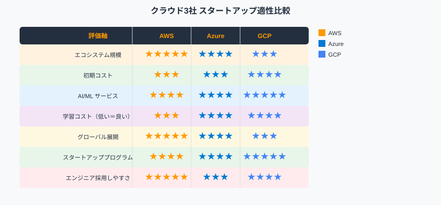
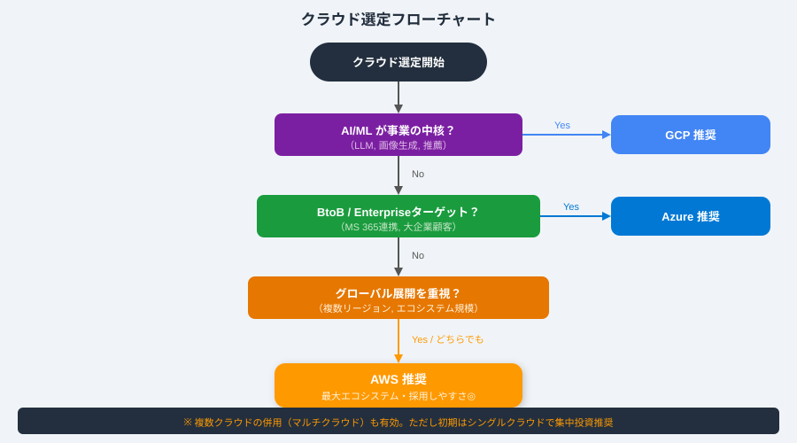
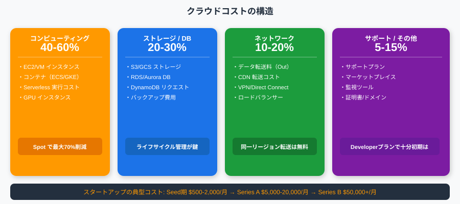
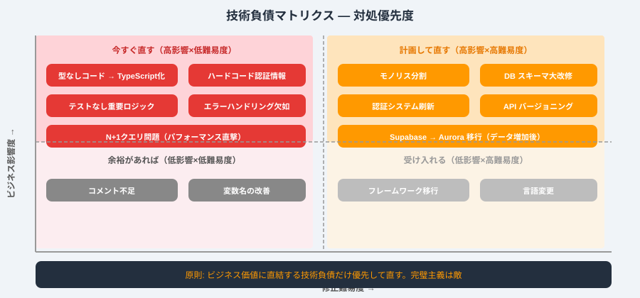
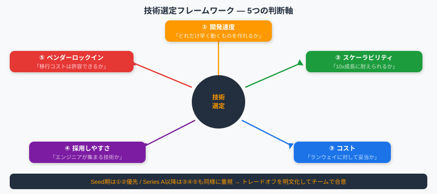
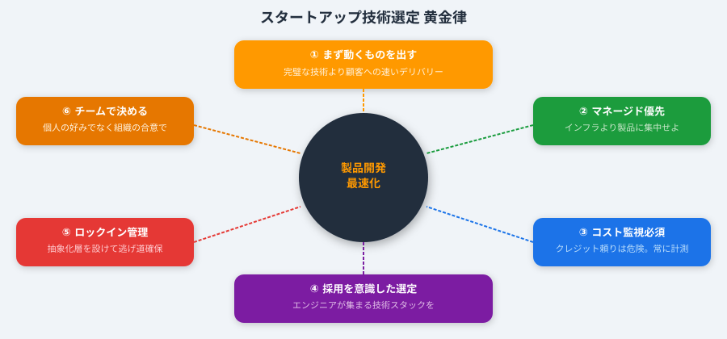

スタートアップの技術意思決定を短期生存と長期スケールの両軸で判断する指針
ステージ別スタック・コスト最適化・よくある選定ミスの3点が本資料で学べる最重要項目
Ch.1〜Ch.2でスタートアップ失敗事例とクラウド3社比較を学び技術選定の土台を作る
Ch.3でSpot/Reserved/FinOpsのコスト戦略を学びフェーズ別コスト目安とアラート設定を習得する
Ch.4でSeed期・Series A期の推奨スタックをフロント/バック/DB/認証/CI/CDで具体的に学ぶ
Ch.5〜Ch.6でMVP→Series A→Series Bの技術変遷と意思決定5軸・投資家DD対策を習得する
技術的失敗の65%はスケールできないアーキテクチャ選択が根本原因
DB移行に$500K〜$2Mと3〜12ヶ月の機能開発停止が発生—Seed期の技術選定ミスが致命傷になる
スケーラビリティ・技術負債・セキュリティがSeries A投資家がTech DDで必ず確認する3大ポイント
採用可能性とコスト構造がSeries A DDの重要評価軸—CTOへの技術インタビューが合否を決める
Seed期に1日の手抜きがSeries Aで1週間のコストになる—技術負債は複利で積み上がる
型なしJS・テストなし・ハードコード・過剰結合モノリスの4つが技術負債の主因—最初から規律を守る

Lambda(サーバーレス)・ECS・EKSの3択はチーム規模とトラフィック予測で決める
データベース選定はRDB(整合性)・DynamoDB(スケール)・Auroraの3軸判断
SageMaker(学習カスタム)・Bedrock(API)・Rekognition(AIサービス)の3層で選択
AWSはLambda@Edge対応・GCPはAnycast・AzureはVerizon/Akamai経由でCDN特性が異なる
データ転送OUTはAWS $0.085/GB・GCP $0.08〜0.12・Azure $0.087—同一VPC内転送は全社無料
開発者体験はCI/CD整備・ローカル再現性・デバッグ容易性の3点で評価
AWSは秒課金・GCPは自動CUD（30〜57%割引）・AzureはHybrid Benefit—価格モデルの本質的差異
AWS Spotは90%割引・GCP Preemptibleは24時間固定停止・Seed期はクレジットで実質$0運用可能
AWSは33リージョン105AZで世界最多・Azureは地域数最多・GCPは40リージョンで拡張中
AWS東京+大阪の2リージョンでDR設計が容易—グローバル展開を考えるならAWSが最も豊富
Seed期はAWS Activate $100Kが第一推奨—AI重視のみGCP Google for Startups $200Kを選ぶ
Series B以降はEnterprise顧客→Azure、AI事業→GCPを追加検討—Seed期はAWS/GCPの二択に集中
Stripe・Airbnb・NetflixのSeed期からAWSを活用した事例がAWSエコシステムの信頼性を証明する
freee・LayerX・UbieがPCI DSS・AI・HIPAA要件にAWSマネージドサービスを最大活用して成長した
Snapchat・Spotify・DuolingoのGCP活用事例はBigQuery・Firebase・Vertex AIの組み合わせが共通
GitHub・AdobeのAzure事例と日本SaaSのTeams統合需要が事業ドメインによるクラウド相性の違いを示す
マルチクラウドは運用複雑度が2〜3倍に増加—エンジニアのスキル分散がスタートアップには致命的
Series B以前はシングルクラウド集中投資が強推奨—最初からマルチクラウドはコスト削減より複雑さが上回る
コンピューティング・DB・AI/ML・CDN・価格モデルを3社横断で比較した決定版表


AWS Activate $100KはSeed期の2〜3年分の運用コストをカバーできる最大活用すべきプログラム
AWS Activate $100K+GCP $200Kの組み合わせでSeed期コストを実質ゼロにできる—$500アラートは必須
Spotインスタンス最大90%割引—バッチ・CI/CD・MLトレーニング・ステージング環境に最適なコスト削減手段
ECS+Spot Fleetを使えば本番APIサーバーでもSpotを安全に混用してコストを70%以上削減できる
3ヶ月以上同スペックで稼働実績がありSavings Plansが最大72%割引—月$5,000超えた時点で購入検討
AWS Savings Plans=EC2/Lambda/Fargate横断で最も柔軟・GCP CUD=自動割引で判断が最も簡単
ECS Bin PackingとLambdaのリクエスト×時間×メモリ課金でサーバー利用率を最大化してコスト削減する
Lambda有利は100万/日未満・EC2/コンテナ有利は100万/日超—アイドル時ゼロコストが最大のメリット
Cost Explorer無料・Budgets $0.02/予算・Trusted Advisor・Compute Optimizerの4ツールを組み合わせて活用
まずAWS Budgetsだけ設定するのがスタートアップ推奨—InfracostやCloudHealthは複雑さが増すので後から
Seed期$500・Series A$5K・Series B$50K/月の目安でコストをフェーズ管理
AWS Budgets $500アラート・Cost Explorer最大コスト特定・開発環境自動停止の3つが今すぐできる必須対策
Series AでSpot+On-demand混合・Savings Plans購入・月次コストレビュー・S3ライフサイクルを本格実施する
GitHub Stars1K以上・求人数確認・マネージドサービス有無・移行容易性の4フィルターで技術を選ぶ
SaaS版で学習コストを下げて標準APIに準拠した技術を選ぶ—ゴールデンルールは最初につまらない技術を選ぶこと
Next.js 15+shadcn/ui+Tailwind CSSがReactエコシステム最大でVercelで即デプロイできる最速フロントエンド
TypeScript/Node.jsは採用しやすさ最大・Pythonは AI/ML親和性・Goは高パフォーマンスの特性を持つ
Seed期はNode.js+HonoかPython+FastAPI、AI重視はPython+FastAPI—チームが得意な言語の選択が最優先
まずPostgreSQLが業界ベストプラクティス—ACID・JSONB・チームのSQL習熟度の3条件で95%のケースに対応
NoSQL選択は「スケールするから」という理由は禁止—PostgreSQLは適切なインデックスで数千万レコードを処理できる
JSONB・pgvector・Row Level Security・全文検索・TimescaleがPostgreSQL一本で全て実装できる理由
Supabaseで認証+ストレージ+RealtimeをSeed期に統合管理、Series A以降はAurora PGに移行する標準経路
RedisはセッションストアからAPIキャッシュ・レート制限・ジョブキュー・PubSubまで5用途で活用できる
Upstash RedisがSeed期Serverless推奨・ElastiCacheはSeries A以降・Redis CloudはマルチクラウドのSaaS版
NextAuth.jsまたはSupabase Authがコスト$0で最速—BtoB SaaMLで SAML必要時にAuth0またはKeycloakに移行
TerraformがマルチクラウドのIaC標準—最初からリポジトリを用意して後付けの痛みを避けることが重要
GitHub Actionsがコードと同リポジトリ管理・Dependabot+CodeQLセキュリティスキャンが標準装備で最適
Seed期はECS Fargateで設定最小・Series A以降でEKS検討—マイクロサービスが5つ以上になってからk8sを導入
k8sはインフラエンジニアを専任で雇えるフェーズから—チームにk8s経験者がいなければECS Fargateで十分
Seed期最小構成はCloudWatch+Uptime+Sentryフリープランの組み合わせで$0から始められる
Series AのAll-in-oneはDatadog・OSSスタックはPrometheus+Grafana+Loki—アラートは行動につながるもののみ
Seed期はREST（OpenAPI）またはtRPC・GraphQLは複数クライアント時・gRPCはサービス間通信に限定する
Stripeは国内スタートアップ70%以上が採用—SCAutomaticとBillingとRadarが競合差別化の3大機能
Stripe CheckoutとElements・Payment Intents APIの3段階でカスタマイズ度と実装速度のトレードオフを選ぶ
GitHub活動・Open Issues・マネージドSaaS版・Stack Overflow回答数の4項目が採用前の必須チェック
ライセンス確認（GPL商用注意）・採用市場サイズ・Dependabot脆弱性チェック・2世代以上遅れないことが重要
Seed期4原則：モノリスから始める・マネージドサービス最大活用・Day1からCI/CD・TypeScript必須
k8s/マイクロサービス/複雑なキャッシュ/自前認証の4つをやらないことがSeed期を最速で乗り越える鍵
Multi-AZ+ALBヘルスチェック+自動バックアップでSeries Aに必要な99.9%可用性を達成する
Series A後半のスケール準備フェーズで優先的に取り組むべき施策を確認
ブランチ戦略統一・コードレビュー必須・CI自動化・オンコール体制がSeries A開発プロセスの4本柱
Series BのマルチリージョンとDB sharding・CDN+Edgeでグローバル対応—コンプライアンス対応も本格化
Series B品質基準の後半タスクをチェックして上場準備レベルの技術基盤を確認
Platform Engineering・FinOps専任・セキュリティエンジニア採用がSeries B以降の組織課題
Next.js/React・TypeScript（Node）・PostgreSQLがそれぞれ採用市場で最も求人数が多いスタック
採用しやすいスタック選択の後半基準で候補エンジニアの評価軸を確認
NextとTypeScriptで採用JDを書けることが2026年のエンジニア採用で最も有効な技術スタック設計
最新技術・意思決定参加・スケールプロダクトへの貢献が優秀エンジニアの採用を決める3つの条件
TypeScriptフルスタック+AI活用+Remote firstの組み合わせが2026年の優秀エンジニア採用に最も効く

Seed期CTOはコードを書きながら採用を担当・Series AはアーキテクチャビジョンにシフトするCTO像
Series B以降はVP of Engineeringに実行を委任してCTOは事業戦略と技術戦略の整合に集中する


Tech Due DiligenceはVCが実施する技術評価、合格基準を事前に把握して準備
技術負債返済計画・SPOF対策・CTOの判断力がSeries A投資家のTech DD評価基準
採用可能なスタック・ユニットエコノミクス推移・インフラコスト試算・個人情報/GDPR対応がDD必須確認項目
AWS Activate・Google for Startups・Microsoft for Startups Founders Hubの3プログラムを最大活用する
AWS Cost Management・FinOps Foundation・AWS Well-Architectedの組み合わせがコスト最適化の公式情報源
Next.js・Supabase・Terraform・shadcn/uiの4つが本資料推奨OSS実装スタックの公式ドキュメント
Stack Overflow Developer Survey・CNCF Annual Survey・a16z/Stripe Engineering Blogが技術トレンドの一次情報源